Şarköy
Adana – Kayseri il sınırlarının kesiştiği bölgede Adana’nın Tufanbeyli ilçesinde yer alan antik yerleşim yeri: Şarköy. Şu an bölgede bir Avşar köyü olan Şarköy yer almaktadır ve antik yerleşkenin tam üzerine inşa edilmiştir. Bu durum neticesinde tarihi yapılarda derin yaralanmalar hatta kayıplar söz konusu olmuştur. Köydeki evler incelendiğinde bir çoğunun duvarlarında tarihi yapılardan sökülmüş taşların kullanıldığı görülebilir.
Bölge içerisinden bir nehir akmaktadır ve bölgeye can vermektedir. Bölgede 5-6 mt yüksekliğinde mermerden bir kapı bulunuyor, bu kapı üzerinde ince ince işlenmiş motifler yer almaktadır. Yine bölgede bir kilise ve bir de anfi tiyatro yer alıyor. Yapılar incelendiğinde blok taş ve mermerden inşa edildikleri açıkça görülmektedir. Bu durum bölgede büyük bir medeniyetin yaşadığına işaret etmektedir.
Şimdi de bölge halkından ve internetten öğrendiklerime gelelim:
Şarköy, eski adıyla Komana (Comana) olarak bilinmektedir. Bu bölgede Ma-Enyo adında saçının bir tarafı gümüş bir tarafı siyah olan bir tanrıça yaşarmış, bu tanrıça kadınlığın sembolü imiş ve hizmetinde binlerce kadın ve hadım edilmiş erkek çalışırmış. Şarköy ise bu tanrıçanın tapınağının yer aldığı yer imiş. Bugün hala ayakta olan devasa mermer kapı ise o tapınağın giriş kapısı imiş. Tapınak ve tanrıça o kadar büyük bir itibar görürmüş ki, zamanın bölgede yer alan tüm kralları, taç giymeden hemen önce gider bu tapınağı ziyaret ederlermiş. Her ziyarette ise çok zengin hediyeler tanrıçaya sunulurmuş. Rivayetlere göre yağmur yağdığında köyün içinden akan nehirin kenarın toplanan köylüler, yağmur sularının aşındırmasıyla ortaya çıkan altınları toplarlarmış. Çıkan savaşlardan sonra yakılan tapınak, bölgede meydana gelen güçlü heyelanlar neticesinde bugün yerin birkaç metre altına gömülmüş. 1940’lı yıllarda bölgeye gelen İngiliz araştırmacılar, bölgenin altında tam bir antik kentin yer aldığını saptamışlar.
Yukarıda anlattıklarımın tamamını ya duydum ya da internetten okudum. Gerçek olup olmadığı hakkında sadece kanaatim var ki bu da olumlu yöndedir. Bölgeye her gittiğimde içim huşu ile dolar ve bir garip hisse kapılırım, çok mistik bir yerdir.
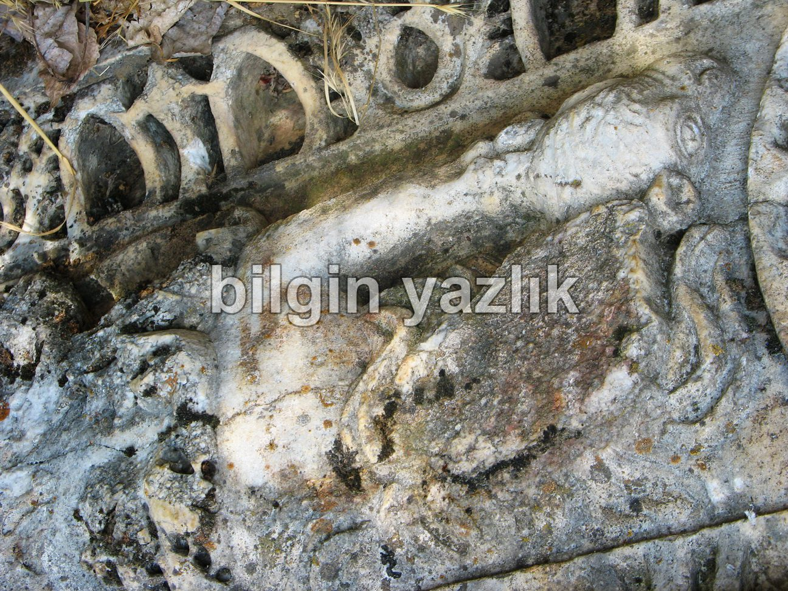
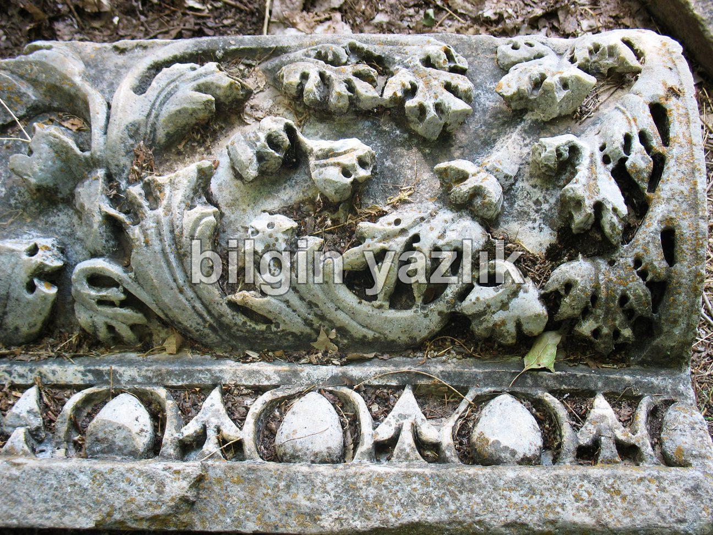
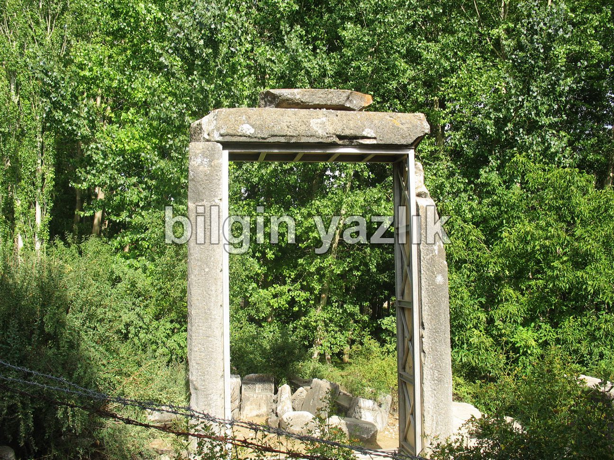
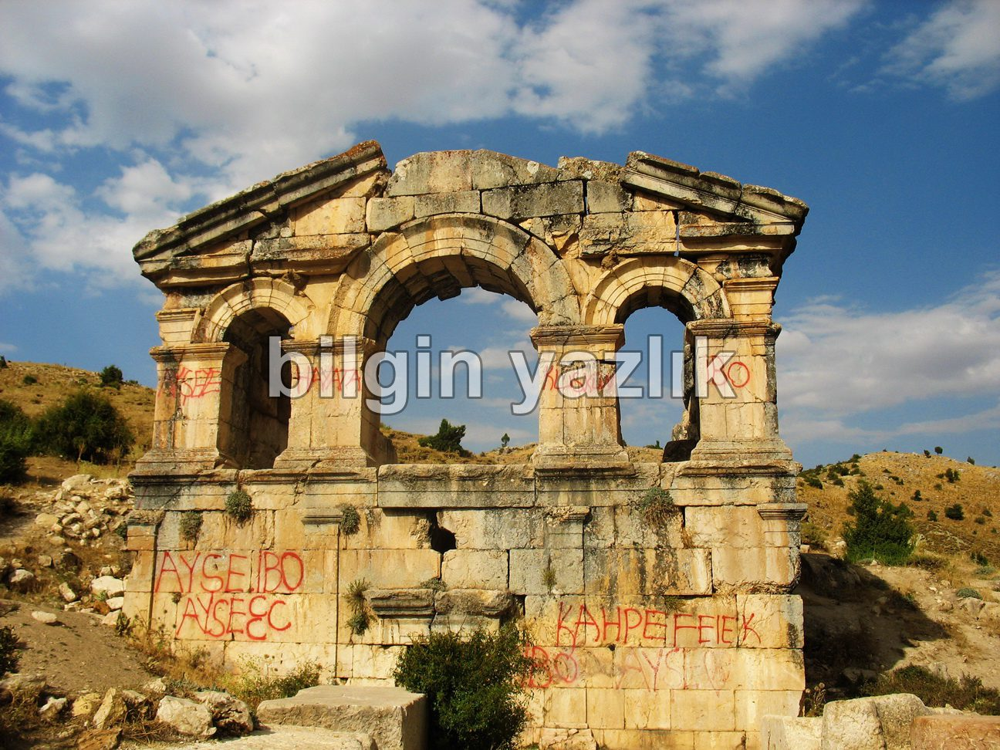
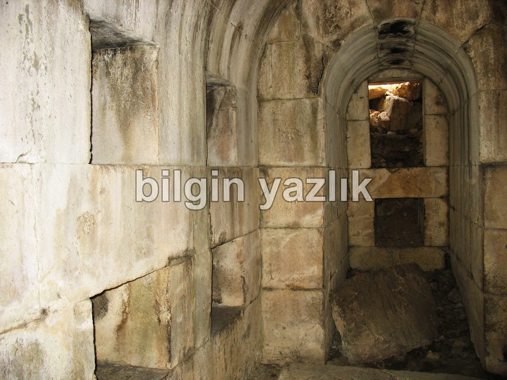
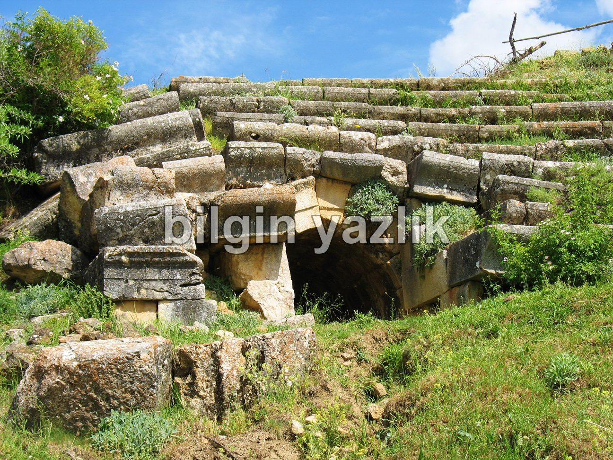
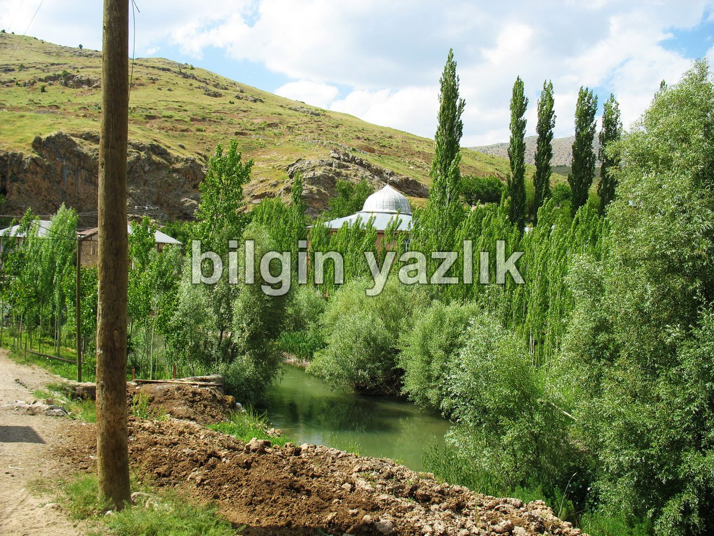
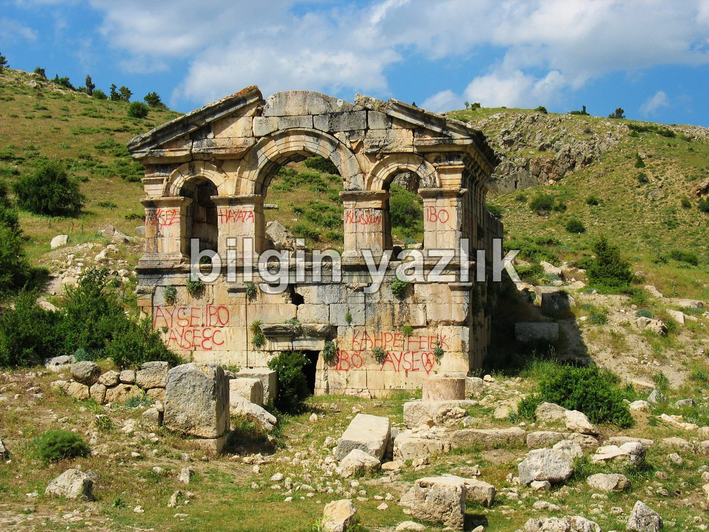
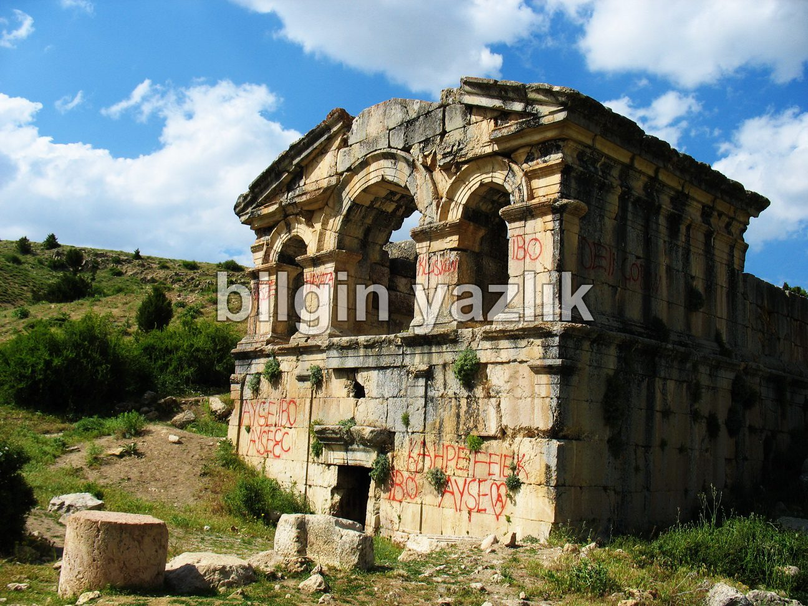
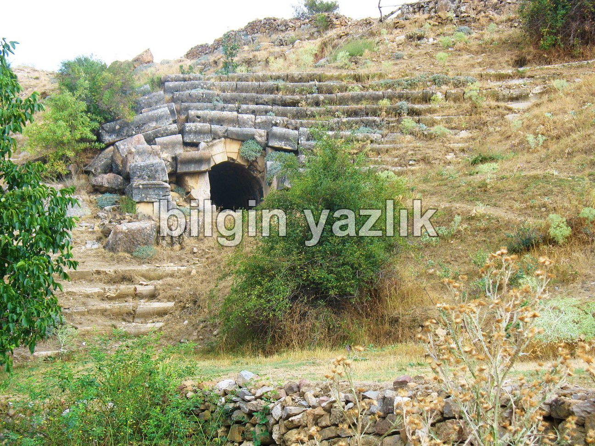
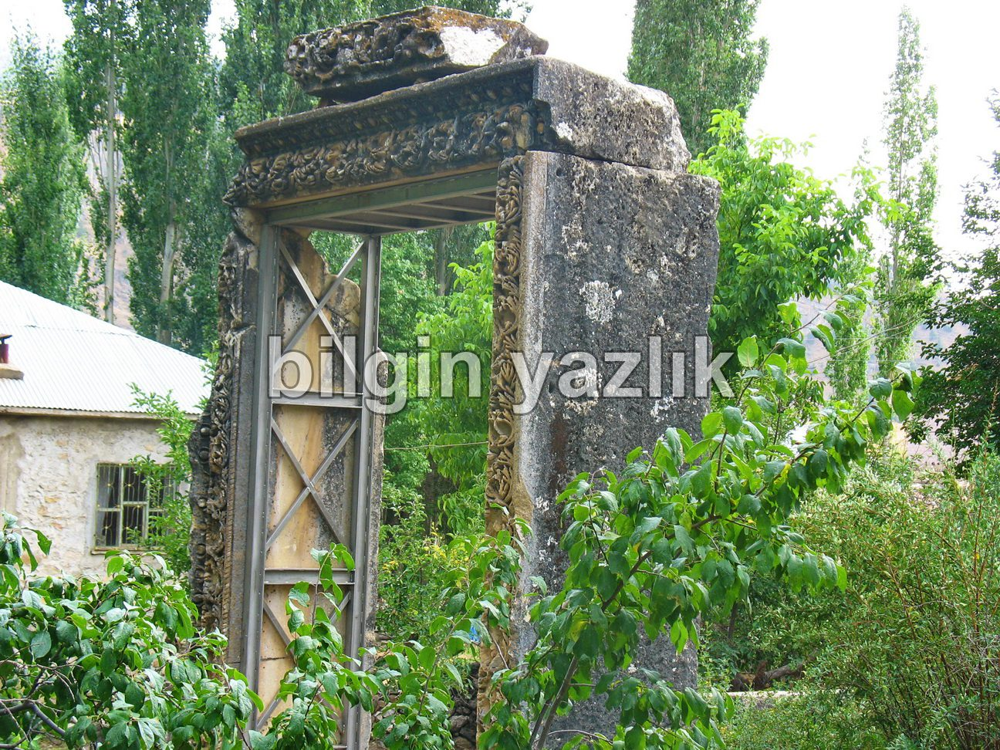
Bu yazı taliyol arşivinden taşınmıştır. · özgün kayıt